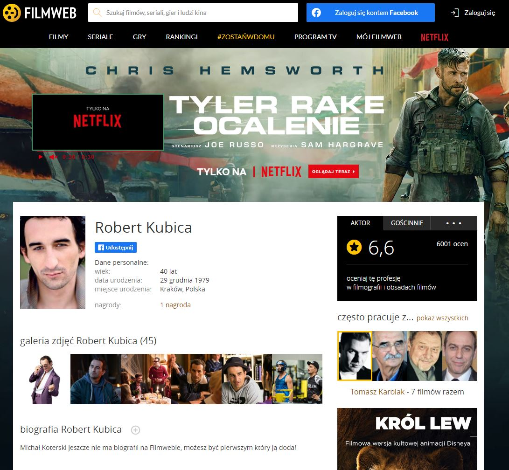
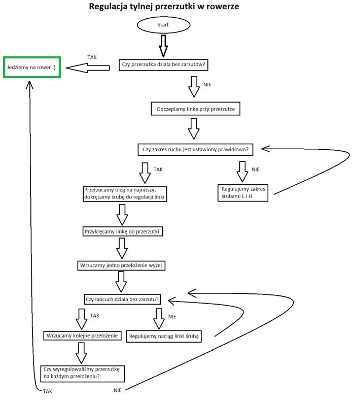

Tydzień 1
Nie wiedziałem nawet że szkolenie wystartowało, jakimś cudem przegapiłem newsletter 😜
Hej! Na imię mam Michał. Z wykształcenia jestem inżynierem budownictwa, jednak okazało się że pracując na budowie po 10, 12 a czasem i więcej godzin dziennie brak mi czasu na własne projekty, pomysły i rozwijanie zainteresowań. Kilku znajomych ze studiów pracuje obecnie w IT, a kurs WTF traktuję jako pierwszy krok ku zmianie pracy 😀 Pamiętam że w liceum na informatyce stworzyłem prostą stronkę, pisałem ją jeszcze wtedy ręcznie w notatniku, coś na wzór takiej mało rozbudowanej Gildii RPG z CD Action (znajdowało się to na płycie z dodatkami i też było napisane w HTML-u) i może dlatego wybrałem frontend :). W wolnych chwilach lubię jeździć na rowerze na dłuższe wycieczki(bikepacking), gotować i czytać, głównie fantasy.
Tutaj znajdują się notatki ze szkolenia WTF:Co ten frontend. Bedą one systematycznie uzupełniane o nowe lekcje, narzędzia i przydatne linki.
Nie wiedziałem nawet że szkolenie wystartowało, jakimś cudem przegapiłem newsletter 😜
-zainstalowałem Visual Studio Code, Google Chrome
oraz Slack
-skonfigurowałem katalogi i zaczynamy zabawę!
-warstwy strony internetowej:
Warstwa 0 - treść
Warstwa 1 - Semantyka: HTML
Warstwa 2 - Prezentacja: CSS
Warstwa 3 - Interakcja: JavaScript
-HTML - poznałem podstawowe znaczniki, staram się zrozumieć jak w
poprawny sposób zagnieżdżać tagi
-CSS - podstawy CSS, stworzenie pliku z zewnętrznym arkuszem
stylów
-korzystamy z DevTools -sprawdzanie kodu za pomocą validatora HTML
-metodologia Kanban, zawsze wiedziałem że ten cały multitasking jest
przereklamowany.
-nowe znaczniki HTML, a tam między innymi tworzenie linków i łączy
wewnętrznych, wstawianie obrazków, tworzenie nawigacji
-reguły nazywania rzeczy:
-nazwy bez polskich znaków;
-nie używamy spacji;
-najlepiej używać angielskich słów;
-trzymamy się konsekwentnie jednego schematu
Konwencje nazewnictwa:
-camelCase np mySuperBoldHeader używamy do: zmiennych w JS
-kebab-case np my-super-bold-header używamy do: nazywanie
plików w katalogach, można do atrybutu id oraz class
-snake_case np my_super_bold_header używamy do:
-PascalCase np MySuperBoldHeader używamy do:
Rozpoczął się tydzień szósty, w tym tygodniu mam wiele do nadrobienia, chciałbym powtórzyć tydzień 3 i nadrobić przynajmniej 4 i 5, zobaczymy jak to pójdzie. Od teraz będę się starał wrzucać codzienne aktualizacje do mojej strony.
Jeszcze raz oglądam tydzień 3. Uzupełniam notatki z lekcji o HTML-u i robię przemeblowanie w całym dokumencie, bo zagnieżdżanie nie jest takie proste, jak mi się wydawało 😅
Praktycznie brak czasu, obejrzałem lekcję o konwencjach nazewnictwa i trochę CSS, uzupełniłem notatki.
Dzisiaj męczę CSS-a, uzupełniając podstronę o nim dotarłem do
nagłówka h4, a po ogarnięciu specyficzności uznałem, że warto
trochę to wszystko przeorganizować, czyli znowu semantyka, przy
okazji pozbyłem się nagłówków h4 (kill me now pls).
Działanie przeglądarki - przeglądarka korzysta z protokołu HTTP
lub HTTPS (Hypertext Transfer Protocol (secure-szyfrowany) -
protokół do transportowania HTMLa), żeby pobrać i wyświetlić
wszystkie pliki znajdujące się na stronach internetowych.
URL - Uniform Resource Locator )adres, który wpisujemy, składa się
z protokołu, hosta, portu, roota, ścieżki dostępu do zasobu i
parametrów.
Wpisujemy adres -> przeglądara szuka serwera, odpowiada za to DNS
- konwertuje adres np cotenfrontend.pl na adresy IP -> po
znalezieniu serwera odpytue o index -> pobieranie zawartości HTMLa
do przeglądarki i szukanie dodatkowych zasobów (obrazki, skrypty,
style), dla każdego z zasobów wykonuje oddzielne zapytanie. ->
Przeglądarka parsuje (sprawdza składnie) i renderuje stronę,
aplikując style i łąduje zasoby.
Komunikacja przeglądarki z serwerem następuje w modelu request -
response.
Devtools - zakładka network. Pierwsza rzecz - czysty HTML bez
żadnych stylów. Następnie wczytał się plik CSS, poniżej widać inne
rzeczy.
Kody odpowiedzi HTTP:
-200 - ok
-30x - przekierowywanie na inną stronę
-404 - Sorry
-50x - błędy serwera (wewnętrzne, internal server error)
Root (/) - pokazuje, w którym miejscu przeglądarka powinna szukać zasobu. Ścieżki bezwzględne ( / z przodu) i względne ( bez / z przodu). Na stronie odpalanej z dysku wpisywanie / przy zasobach nie jest wymagane.
JavaScript epizod pierwszy: Mroczne Widmo
Podstawowe komendy w terminalu..
Poznaję system kontroli wersji GIT. i tworzę pierwsze repozytorium, czyli zaczynamy tydzień czwarty!
Ściągamy wersję stabilną, zaznaczamy wszystkie checkboxy. Na systemie Windows tworzymy katalog roboczy na dysku C. Długa ścieżka do katalogu może powodować problemy.
Kombinacje klawiszy:
! + Tab Szkielet strony
ctrl + s zapisanie pliku
ctrl + shift + p
shift + alt + f formatowanie dokumentu
- ls - wypisanie zawartości katalogu
- cd~- przejście do katalogu domowego
- cd nazwa-katalogu/ - wchodzimy do katalogu (używając tabulatora
możemy szybko dopełniać nazwę)
- cd .. - przejdź katalog wyżej
- mkdir nazwa-katalogu - tworzymy katalog o danej nazwie
- pwd - pełna ścieżka, wktórej się znajdujemy
- code . - pozwoli na uruchomienie VSC z linii poleceń w katalogu
bierzącym
W systemie Windows można zainstalować "Linux subsystem for
Windows", wtedy korzystamy z poleceń Linuxowych
- dir - wypisanie zawartości katalogu
- cd katalog - wchodzimy do katalogu (używając tabulatora możemy
szybko dopełniać nazwę)
- cd.. - przejdź katalog wyżej
- cd - wyświetlenie aktualnej ścieżki
- cd C:\ - przejście do katalogu głównego
- mkdir nazwaKatalogu - tworzymy katalog o danej nazwie
- code . - pozwoli na uruchomienie VSC z linii poleceń w katalogu
bierzącym (jeśli nie zaznaczono dodatkowych opcji przy instalacji
VSC ten sposób może nie działać)
Komendy w terminalu:
git --version - jeśli GIT jest zainstalowany poda nam wersję
git config --global user.name "Imię Nazwisko" - konfiguracja
użytkownika
git config --global user.email jannowak@example.com - podajemy
maila, na którego założymy konto w GitHubie
git config --get user.name
git config --get user.email
git init - tworzy puste repozytorium GITa w danym katalogu.
git status - daje nam status(np które pliki możemy dodać do
commita, które są nowe, zmienione)
git add . - dodaje pliki
git commit -m "nazwa" - dodaje commit o danej nazwie
gitk - pokazuje nam całą historię
Repozytorium tworzymy za pomocą polecenia git init. Polecenie to tworzy ukryty katalog .git w aktualnym folderze. Żeby podejrzeć zmiany musimy stworzyć commit(stan projektu na daną chwilę i informacje o tym, co się zmieniło od ostatniego zapisu). Po stworzeniu commita widzimy jego hash(identyfikator). Git przyjmuje każdy rodzaj plików, zmiany śledzi w plikach tekstowych, inne pliki (np orazki) podmieni.
W edytorze VSC
fh
https://www.google.com/intl/pl/chrome/
https://code.visualstudio.com/
https://slack.com/intl/en-pl/downloads/windows
https://validator.w3.org/nu/#textarea
https://www.w3.org/TR/html52/
https://www.w3.org/TR/CSS/
https://codepen.io/
https://trello.com
Spis atrybutów globalnych HTML
https://git-scm.com/
https://coolors.co/
https://github.com/
https://htmlpreview.github.io/
git-scm.com
Mnie śmieszy :)

Schemat regulowania przerzutki

Po przejściu labiryntu